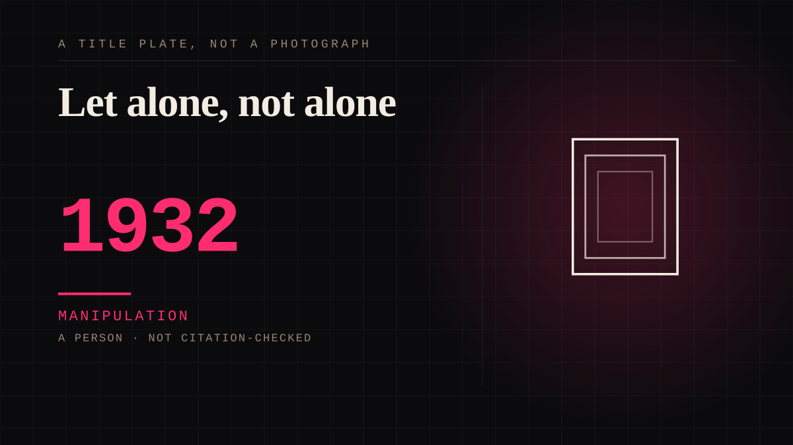

A person · 1932 · Cinema
Let alone, not alone
In Grand Hotel (1932) Greta Garbo said 'I want to be alone', and the line became her biography: the press called her the Swedish Sphinx and MGM capitalised on the mystery. In LIFE in January 1955 she corrected the record - she had wanted to be let alone, not alone, and there is all the difference - but the correction did not take, and the letters she wrote at the time read lonelier than the legend does.

The line belonged to a ballerina, and then it belonged to her. As Grusinskaya in Grand Hotel (1932) Garbo says 'I want to be alone' - once, then 'I just want to be alone', then again in conversation with the Baron - and the picture won that year's Academy Award for Best Picture. In 2005 the American Film Institute put the line thirtieth among a century's most memorable movie quotes. The press meanwhile called her the Swedish Sphinx, and the arrangement is plain in the record: she spurned Hollywood's publicity rules, MGM eventually capitalised on that, because it bolstered the image of the silent and reclusive woman of mystery, and her MGM contract expired after As You Desire Me later in 1932. So the surface had two maintainers - the woman who refused and the studio that found the refusal useful.
In January 1955 she corrected the sentence she is famous for saying.
LIFE's piece of that month has her: 'I never said, I want to be alone, she told a friend recently. I only said, I want to be let alone! There is all the difference.' The same article states how the myth was assembled: repeatedly, it reads, the myth of Garbo's aloneness was built up by her dogged defences of her personal privacy - her furtive comings and goings, her headlong flights from fans and reporters, her refusal to allow strangers or even strange technicians onto the sets of her movies. The audience's picture was therefore assembled out of refusals it could watch her make, while the private record runs the other way: writing to a friend in 1937 she said 'I go nowhere, see no one', and 'It is hard and sad to be alone, but sometimes it's even more difficult to be with someone.'
The counter-argument is that there was no myth at all, only a private woman who disliked the noise, and it is half right. LIFE records periods of determined solitude and notes that she was seldom literally alone - she had friends, and the piece spends its length on dinners, a prince and a game of tennis. What this entry attaches to is narrower and sits on the audience's side: the finished surface of refusal, which she was not present to contradict and which went on working after she stopped making pictures - thirteen years of it by LIFE's count. Distance is this shelf's property, and it explains why the correction failed: a correction is itself a reply, and the legend did not need one. The accounts read for this entry in 2017 and 2019 both still open with the line she denied.
Manipulation. One-sided attachment engineered for somebody else's benefit. Paid intimacy, parasocial persuasion, sasaeng, grief extraction, the streak. The lane that pays the bills and the lane that causes the most harm, frequently at the same time.
Consideration. The part where somebody stops and thinks. The research, the diagnosis, the ethics, the lawsuits, the regulators. Roughly fifty years of arguing with itself about whether this is a relationship.
Where it sits
1900 1900-1949 · 1932 1949
Provenance · 5 source record(s)
- unverifiedThe correction and the mechanism, in the magazine's own words: 'I never said, I want to be alone ... I only said, I want to be let alone! There is all the difference'; the myth of Garbo's aloneness built up by her dogged defences of her personal privacy, her flights from fans and reporters and her refusal to allow strangers or technicians onto her sets; her periods of determined solitude and the fact that she was seldom literally alone; and the mystery of her thirteen-year absence from the screen. Read through a search index rather than fetched, so the record is unverified: a reader can open this page, this agent did not.LIFE, January 1955 (press article, reprinted at GarboForever) ↗
- unverifiedThe legend as it was still being told in 2017 and the correction underneath it: 'I want to be alone' as the most famous quip attributed to her, her practice of shunning reporters, premieres and fan mail, and her claim that she was misquoted according to the 1955 LIFE piece. Read through a search index rather than fetched, so the record is unverified: a reader can open this page, this agent did not.Smithsonian, "The Profound Loneliness of Greta Garbo" (B. Katz, 2017) ↗
- unverifiedThe private record against the legend: the famous phrase as the line her character speaks in her 1932 hit Grand Hotel and how it fitted her image as a star who shunned Hollywood; her 1937 letter 'I go nowhere, see no one'; and 'It is hard and sad to be alone, but sometimes it's even more difficult to be with someone'. Read through a search index rather than fetched, so the record is unverified: a reader can open this page, this agent did not.The Guardian, "'I go nowhere, I see no one': Garbo letters reveal lonely life of film icon" (V. Thorpe, 2019) ↗
- unverifiedThe manufacture and its owners: MGM eventually capitalising on her aversion to publicity because it bolstered the image of the silent and reclusive woman of mystery, the press routinely calling her the Swedish Sphinx, Grand Hotel winning that year's Best Picture, her contract expiring after As You Desire Me (1932) and her return to Sweden, and the later LIFE explanation that she had said let alone rather than alone. Read through a search index rather than fetched, so the record is unverified: a reader can open this page, this agent did not.Wikipedia, "Greta Garbo" ↗
- unverifiedThe line itself in its setting: Garbo as Grusinskaya delivering 'I want to be alone' and repeating 'I just want to be alone', the AFI ranking of the line thirtieth among movie quotes, and her later insistence that she only said she wanted to be let alone. Read through a search index rather than fetched, so the record is unverified: a reader can open this page, this agent did not.Wikipedia, "Grand Hotel (1932 film)" ↗
Connected · 1 out, 0 in
It sits in